Volumes of Revolution: Disk and Washer Methods#
Discussion & Definitions#
A solid of revolution is when you take a curve (and the area under it) in two dimensions and then revolve it around a straight line (called its axis) to produce a three-dimensional solid.
For example, take the curve \(f(x) = x^2\) on the interval \([0, 3]\) and then revolve it around the x-axis.
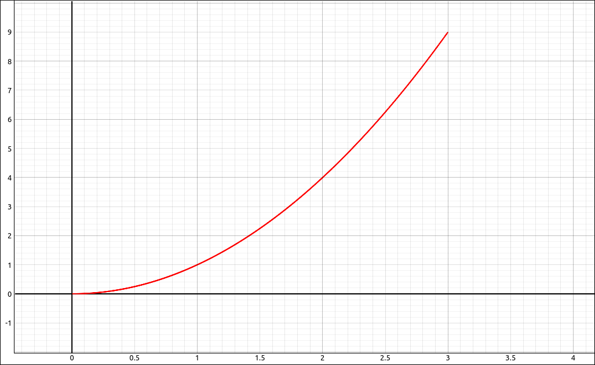
\(f(x) = x^2\) on the interval \([0, 3]\)#
Several views of the surface produced by this curve are below.
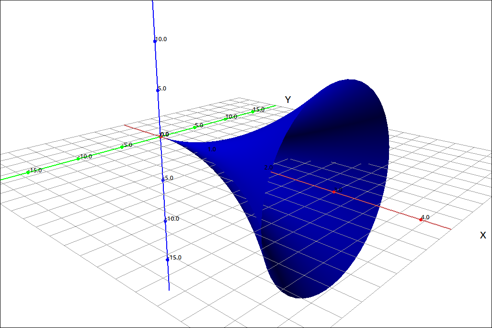
\(f(x) = x^2\) on the interval \([0, 3]\) Revolved About the x-Axis#
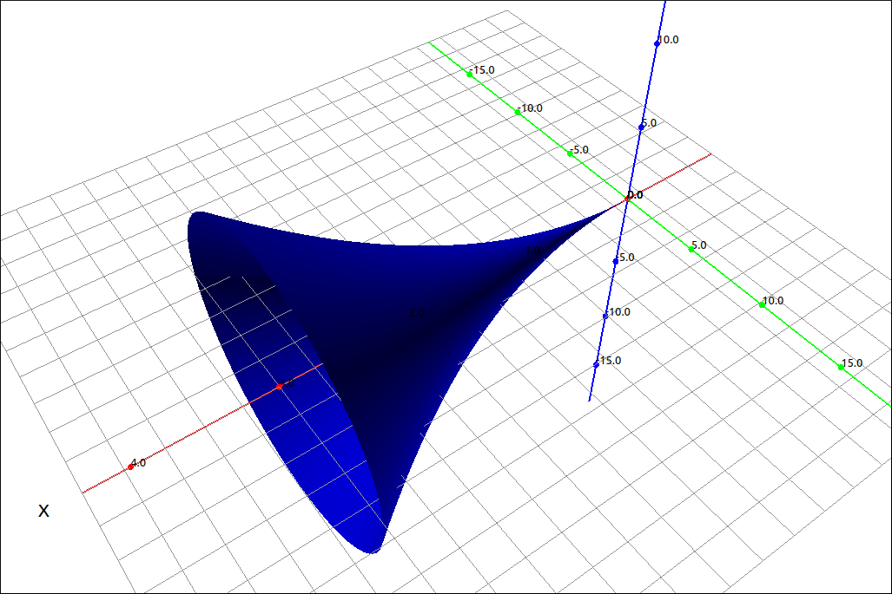
\(f(x) = x^2\) on the interval \([0, 3]\) Revolved About the x-Axis#
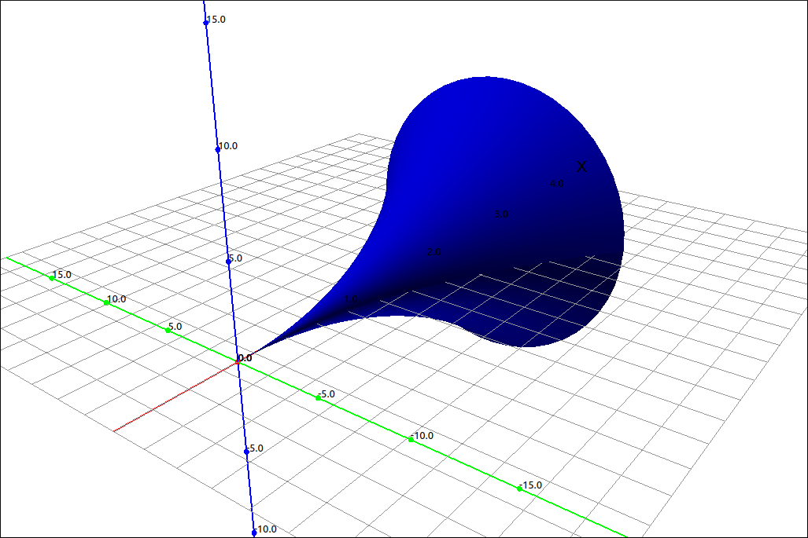
\(f(x) = x^2\) on the interval \([0, 3]\) Revolved About the x-Axis#
In this section we are interested in finding the volume contained inside this surface. Solids of revolution are common in mechanical applications, such as machine parts produced by a lathe. Finding the volume of a solid of revolution is just a special case of the slicing method from the last section.
Theorem: Finding the Volume of an Object by Cross Sections
If \(A(x)\) represents the cross sectional area of an object that extends from \(x = a\) to \(x = b\) then the volume of the object is given by
If we look at the cross section it is clearly a circle, and when filled in, a disk. The process we are about to go through is called the disk and washer method.
Looking at the images above, if we take a cross section perpendicular to the x-axis it is a circle, or disk. The area of a circle is \(\pi r^2\). The radius of the circle is just the functional value at x. So in our example above the area function is \(A(x) = \pi r^2 = \pi (x^2)^2 = \pi x^4\). Hence the volume is,
We can generalize this to any function since all we did was substitute the function in for the r in \(\pi r^2\).
The Disk Method
Let \(f(x)\) be continuous and nonnegative. Define \(R\) as the region bounded above by the graph of \(f(x)\), below by the x-axis, on the left by the line \(x = a\), and on the right by the line \(x = b\). Then, the volume of the solid of revolution formed by revolving \(R\) around the x-axis is given by
The reason we force the function to be nonnegative is so that we do not add in any “negative” volume.
Now let’s consider a slightly more complicated volume. Let’s take the region bounded by \(f(x)=\sin(x)\), \(g(x)=\cos(x)\) and the y-axis. An image of the region is below.
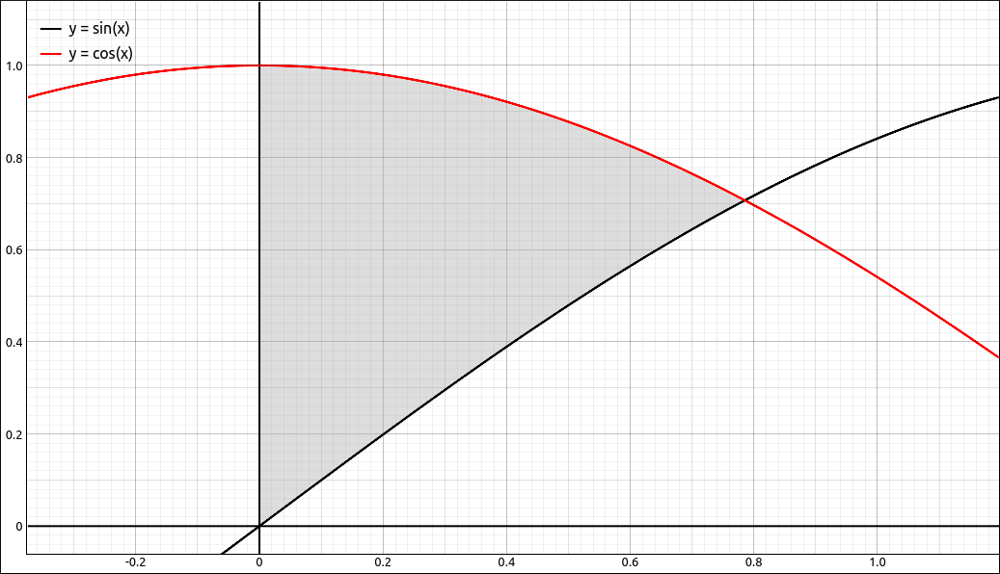
The region bounded by \(f(x)=\sin(x)\), \(g(x)=\cos(x)\) and the y-axis.#
Several views of the surfaces revolved around the x-axis follow,
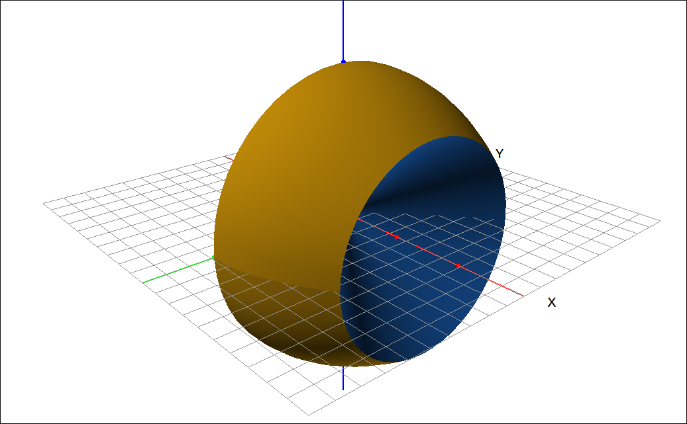
The region bounded by \(f(x)=\sin(x)\), \(g(x)=\cos(x)\) and the y-axis, revolved about the x-axis.#
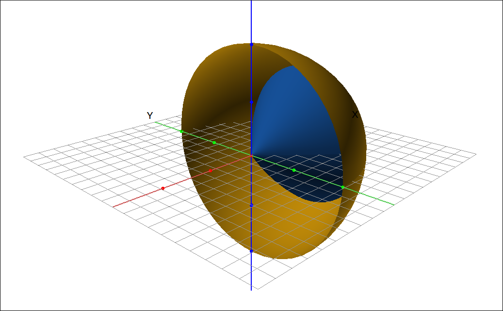
The region bounded by \(f(x)=\sin(x)\), \(g(x)=\cos(x)\) and the y-axis, revolved about the x-axis.#
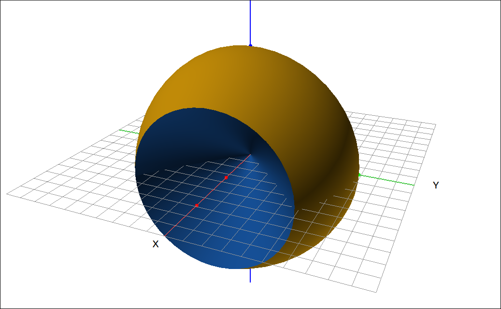
The region bounded by \(f(x)=\sin(x)\), \(g(x)=\cos(x)\) and the y-axis, revolved about the x-axis.#
If we take a slice perpendicular to the x-axis we see,
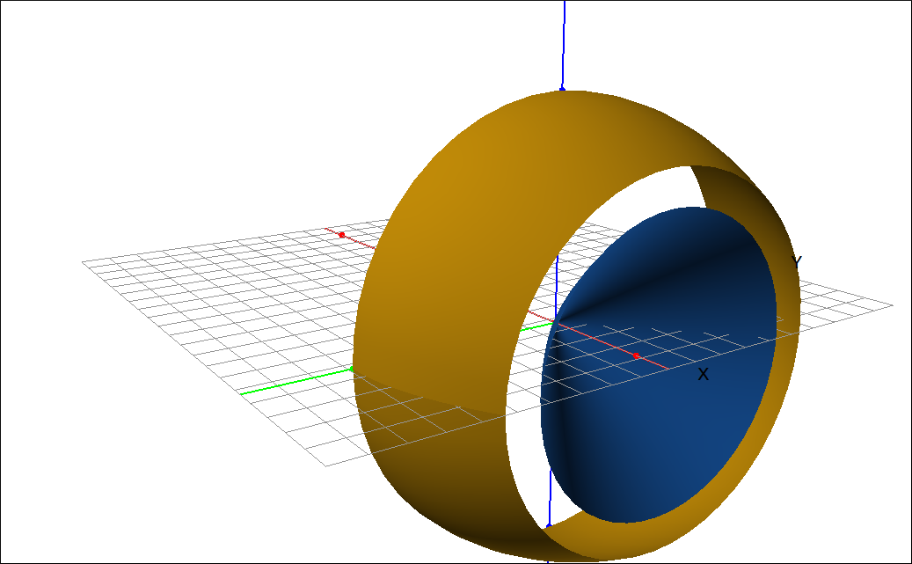
The region bounded by \(f(x)=\sin(x)\), \(g(x)=\cos(x)\) and the y-axis, revolved about the x-axis.#
The cut-out region is the slice which makes a washer. The area of a washer is, \(A = \pi r_o^2 - \pi r_i^2 = \pi(r_o^2 - r_i^2)\), where \(r_o\) is the outside radius and \(r_i\) is the inside radius. Again the radii are functional values of the function on top and the one on the bottom respectively. Thus our area is,
since they intersect at \(\pi/4\) we get,
The process we just went through is called the washer method.
The Washer Method
If \(f(x)\) and \(g(x)\) are continuous, nonnegative functions such that \(f(x) \geq g(x)\) over \([a, b]\). Let \(R\) denote the region bounded above by the graph of \(f(x)\), below by the graph of \(g(x)\), on the left by the line \(x = a\), and on the right by the line \(x = b\). Then, the volume of the solid of revolution formed by revolving \(R\) around the x-axis is given by
Although we have looked at rotating around the x-axis we can rotate these curves around any axis. For example, to rotate about the y-axis all we need to do is interchange the roles of x and y. For example, take the two curves \(y=x^2\) and \(y=x\) revolved around the y-axis.
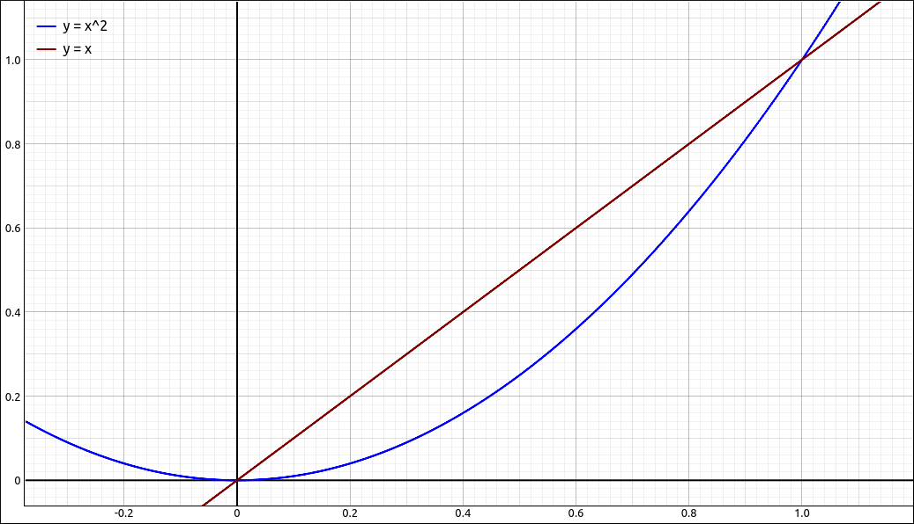
\(y=x^2\) and \(y=x\)#
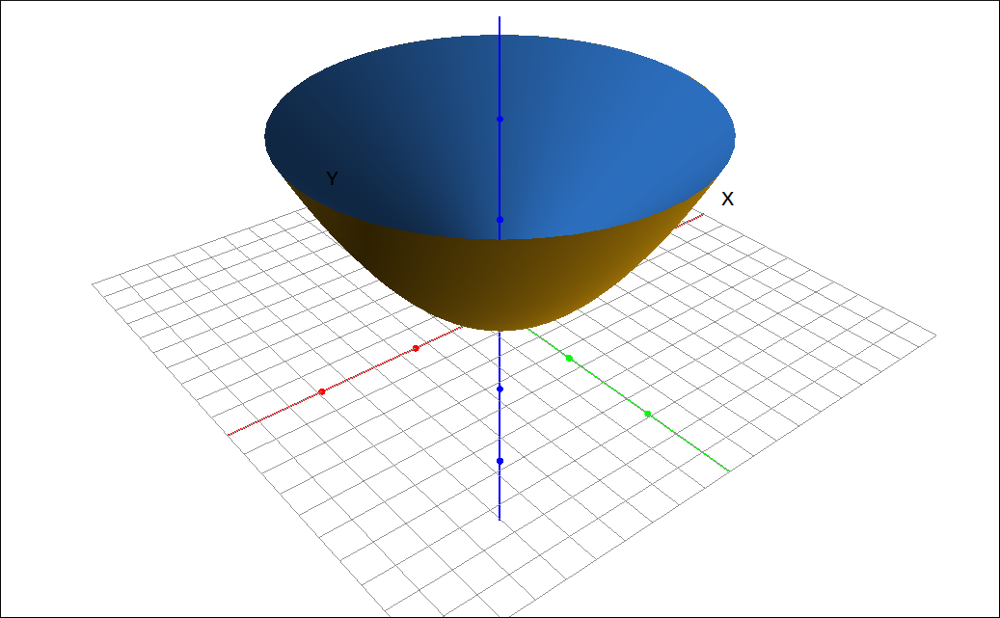
\(y=x^2\) and \(y=x\) revolved around the y-axis.#
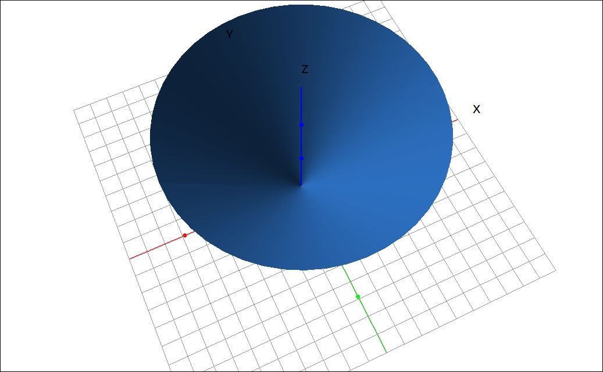
\(y=x^2\) and \(y=x\) revolved around the y-axis.#
If we take cross sections perpendicular to the y-axis we again get washers, the outside radius is \(x=\sqrt{y}\) and the inside radius is \(x=y\). So our volume would be,
Note
We can also revolve curves and regions around axes that are not the coordinate axes. For example, around the line \(y = 3\), or \(x = -5\). In these cases it is best not to use the formulas above since these assumed the rotation about a coordinate axis. The way you should approach these is to,
Draw a picture of the curves, region, and the rotational axis on the plane, as we have done above.
Then draw in the inside and outside radii and determine formulas for these in terms of you independent variable.
Finally, put these into either \(A = \pi r^2\) or \(A = \pi(r_o^2 - r_i^2)\) and then integrate the result.
Example: \(f(x)=\sin(x)\), \(g(x)=\cos(x)\) and the y-axis.#
We will go through our example we did above with the curves \(f(x)=\sin(x)\), \(g(x)=\cos(x)\) and the y-axis.
GeoGebra#
First we will go through the proces of getting a nice image of the revolved surfaces. This process does have a few steps but compared to creating the parametric equations for the surfaces the process is quite simple.
First change the perspective to 3D Graphics, Main Menu > Perspectives > 3D Graphics. This will change the graphics area from 2D to 3D. There is some general information about the 3D graphics view in the GeoGebra users guide included in these tutorials.
Now enter sin(x) and cos(x) into the workspace. These will come in as curves in the xy-plane.
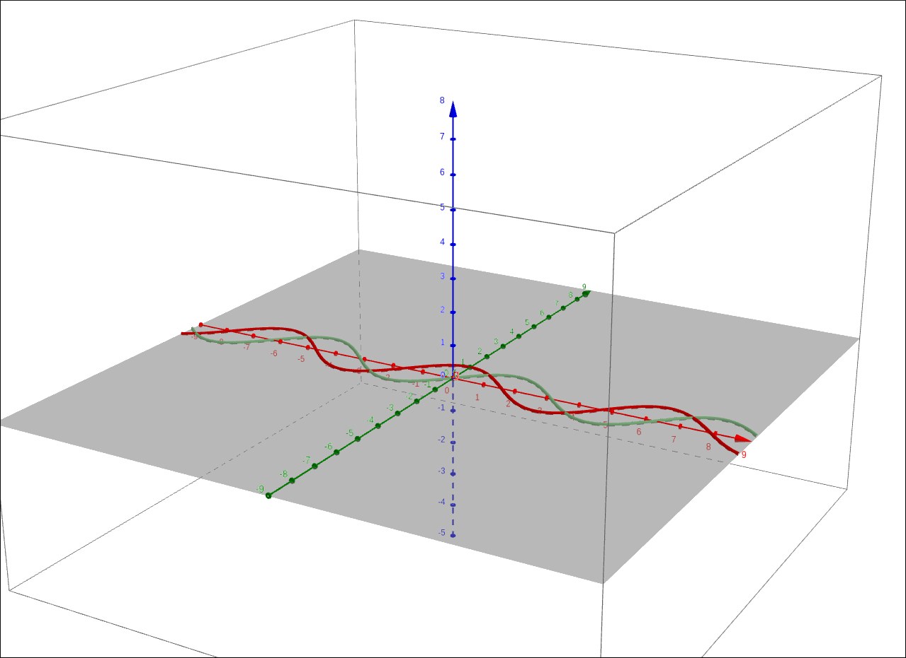
GeoGebra Volume of Revolution Step 1#
Before we make surfaces out of these we want to restrict their domains to \([0, \pi/4]\). GeoGebra does a very nice job with regions and projecting functions onto them. In a new cell, input 0 <= x <= pi/4. Your graphics view should now look like,
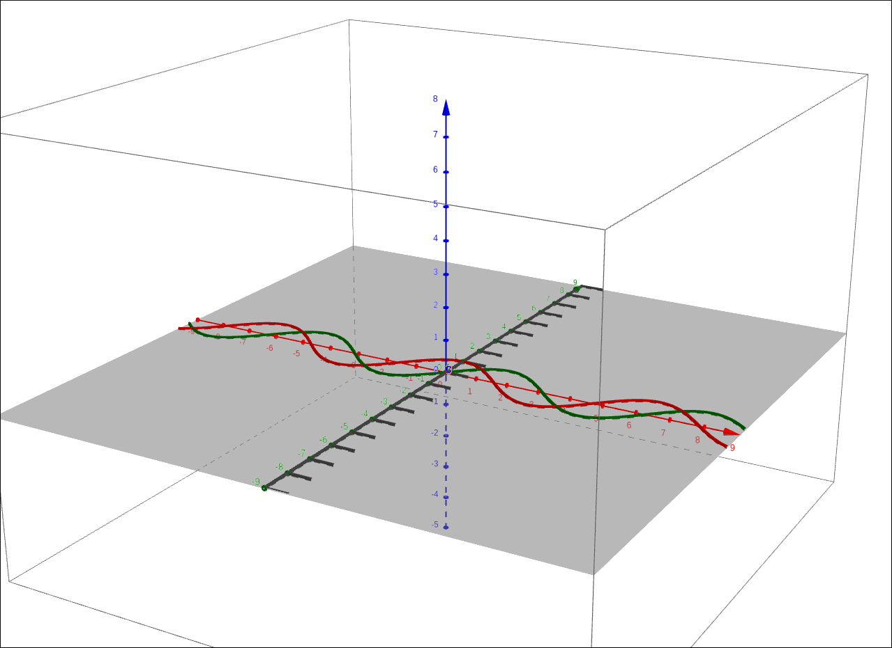
GeoGebra Volume of Revolution Step 2#
Zoom in a bit until you get an image like the following.
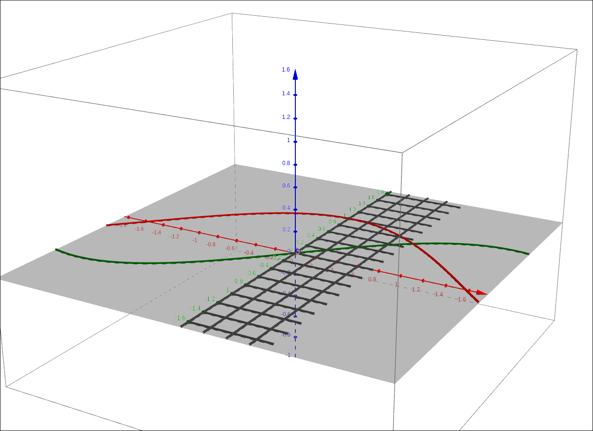
GeoGebra Volume of Revolution Step 3#
We will assume that the sine function came in as f, the cosine function came in as g and the region came in as c. In a new cell input f,c, assume this came in as h. This is the restriction of the function f to the domain c. Now do the same with the cosine function, g,c, assume this came in as p. Turn off the f, g, and c plots. You should see the following,
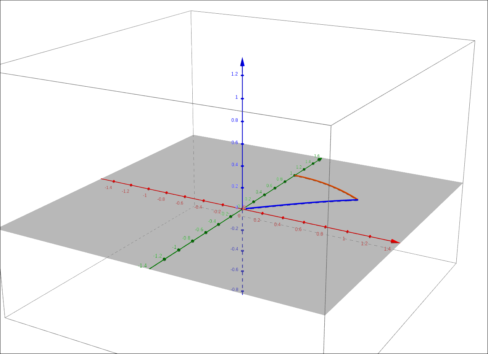
GeoGebra Volume of Revolution Step 4#
This is the region we want to rotate. Now we will rotate each curve into a surface. In a new cell type in, Surface(h,2pi), and do the same for the other curve, Surface(p,2pi). Now we have the image we want. Rotate this around to get a feel for the volume being calculated.
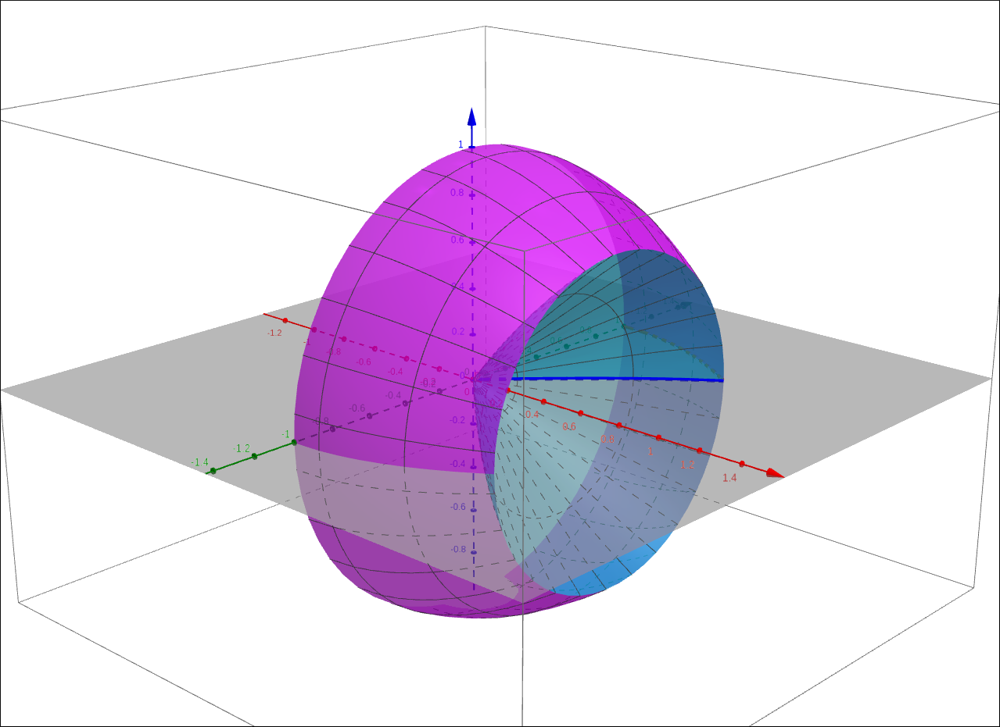
GeoGebra Volume of Revolution Step 5#
To calculate the volume we proceed with finding an integral, input pi(g^(2)-f^(2)), assume this is q, then integrate with Integral(q,0,pi/4) and the result is 1.5708, the approximation to \(\pi/2\).
Note
GeoGebra’s surface plotting uses a semitransparent graphing algorithm that produces some very nice images that you can see through to internal objects, with a wireframe grid to give it a more 3D feel. Graphics algorithms for plotting semitransparent surfaces tend to require an enormous amount of computations and hence the response on rotating and scaling can be a little sluggish. “Local” graphing algorithms are much faster but do not give the nice semitransparent look.
CLAE#
First we will go through the proces of getting a nice image of the revolved surfaces.
Input the two functions,
sin(x)
cos(x)
Click on the 3D graphics tab to show the 3D plotter.
Click and drag on each into the graphics view. They will come in as surfaces, change the type of each to Surface of Revolution. You will get something like the following.
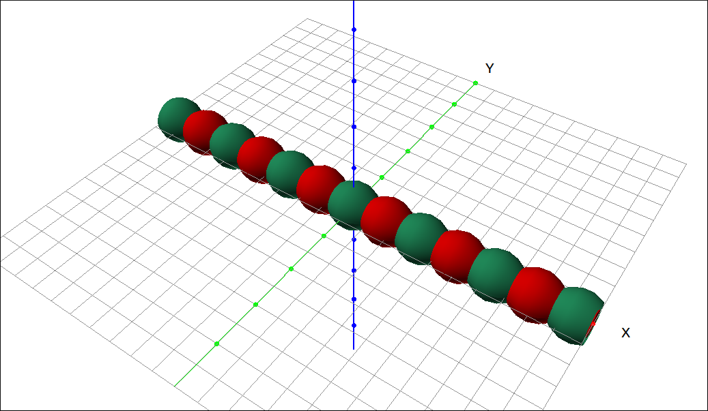
CLAE Volume of Revolution Step 1#
Now go into the properties of each and set the Function Start value to 0 and the Function End value to pi/4. Now the image is,
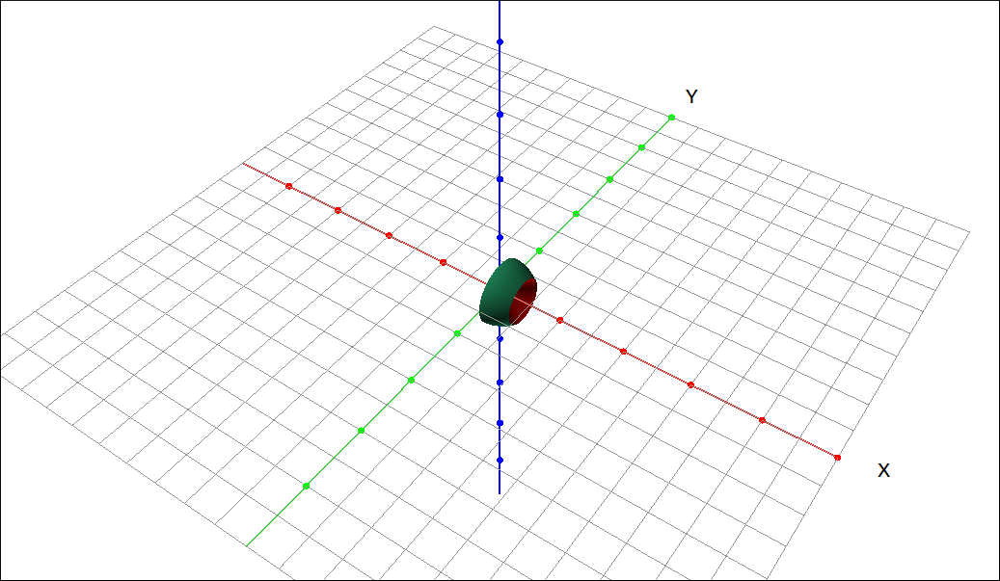
CLAE Volume of Revolution Step 2#
Select Mouse Mode > Scale All Axes then click and drag (or use the mouse wheel) to zoom in on the object then select Mouse Mode > Camera Rotation and Zoom to get back to the standard mode. At this point it should look like the following. Click and drag will rotate the image around so you can get a good view of the surfaces.
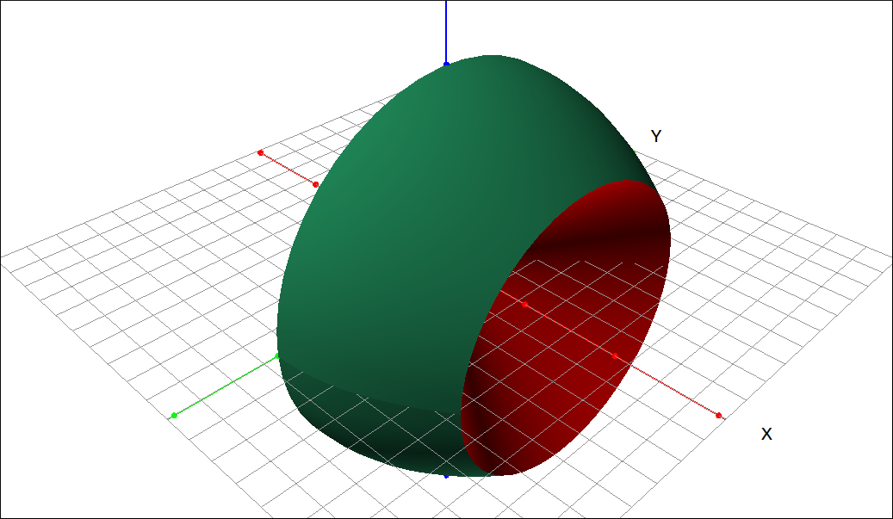
CLAE Volume of Revolution Step 3#
CLAE does not offer surface semitransparent graphing like GeoGebra. You can read above about GeoGebra’s semitransparent graphing. CLAE uses only “local” graphing methods which is why it responds to changes very quickly. CLAE does offer a wireframe mode that will give an approximation to a semitransparent mode and allow the user to see inside the surface. If we click on the properties of the cosine function and change the Plot from Surface to Grid we will see,
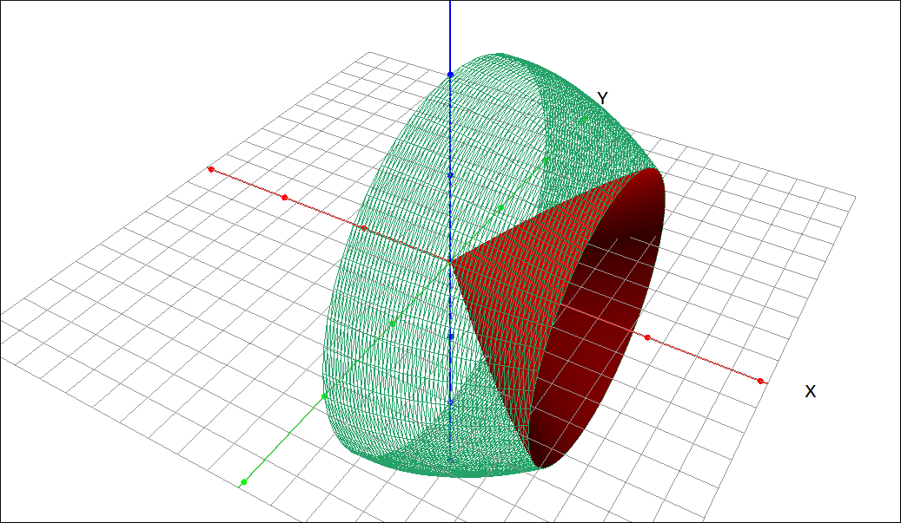
CLAE Volume of Revolution Step 4#
In most cases, having one surface in grid mode and another in surface mode will provide sufficient visual information about the structure of the surfaces. In some cases having more than one surface in grid mode is helpful too but too many of them in grid mode can become difficult to see.
You can also plot the 2D curve along with the surfaces if you would like. CLick and drag the sine and cosine functions to the graphics view again. Change the type of both of these to 2-D Function Space Curve and you should see something like,
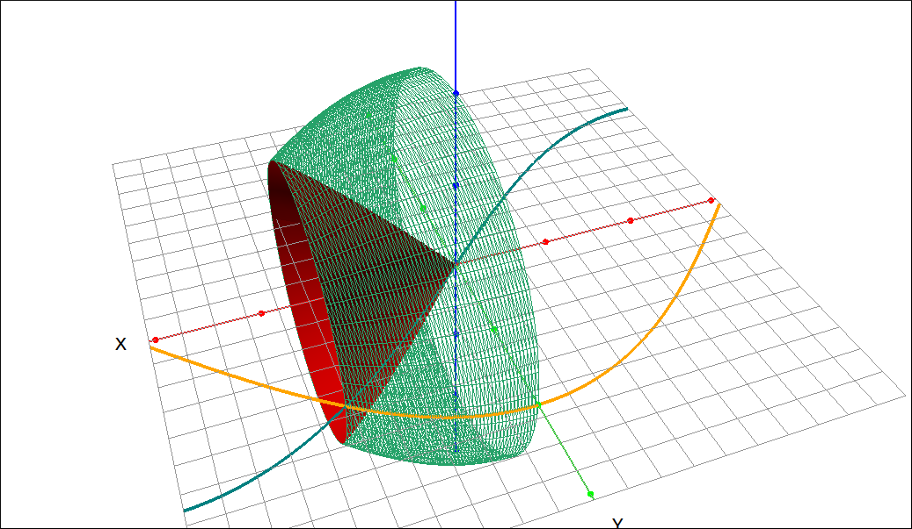
CLAE Volume of Revolution Step 5#
The volume calculation is simply an integral. Assuming that the sine function came in as R1 and the cosine function came in as R2, input pi*(R2^2-R1^2). Then select Calculus > Definite Integral, variable x, lower bound 0 and upper bound pi/4. The result will be \(\frac{\pi}{2}\).
Note
In CLAE, the surfaces of revolution is set by default to rotate a curve about the x-axis, since this is usually the first thing you do. CLAE has facilities to rotate a curve around any line of the form \(x = c\), \(y = c\), or \(z = c\). In addition, it can change the dependent variable to the equation. A complete description of the functionality of the surfaces of revolution can be found in the CLAE user’s guide that is in the help system of the software and included in these tutorials.
Maxima#
Maxima can graph surfaces of revolution but the procedure is a bit cumbersome. We would suggest using GeoGebra or CLAE if you want a nice dynamic visual. As for the calculation of the volume, it is again a simple integral,
integrate(%pi*(cos(x)^2-sin(x)^2),x,0,%pi/4);
Returning \(\frac{\pi}{2}\).